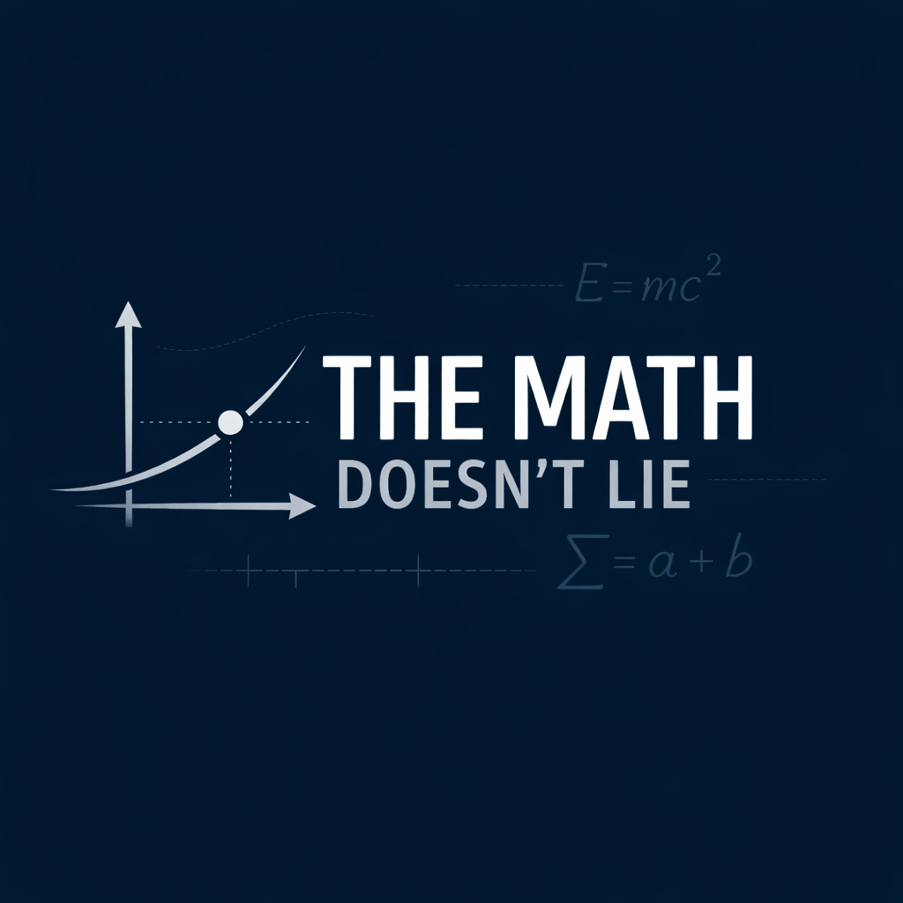

Analysis archive
Analysis
The permanent home for data-driven analysis. Current pieces link to Substack; mirrored article pages can come later.

Analysis archive
The permanent home for data-driven analysis. Current pieces link to Substack; mirrored article pages can come later.